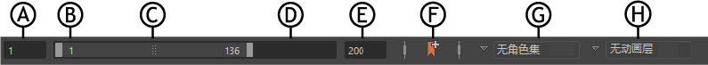
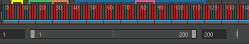

范围滑块（位于时间滑块(Time Slider)下方）用于控制“时间滑块”(Time Slider)中体现的播放范围。

A.动画开始时间B.播放开始时间C.“范围滑块”(Range Slider)栏D.播放结束时间E.动画结束时间F.“时间滑块书签”(Time Slider Bookmark)图标 G。角色集(Character Set)菜单H.动画层(Animation Layer)菜单
有关显示在范围滑块旁边的“帧速率”(Framerate)、“循环”(Loop)、“自动关键帧”(Auto Key)和“动画”(Animation)图标的信息，请参见播放选项(Playback options)。
- 动画开始时间
- （上图中的 A.）
-
该字段用于设定动画的开始时间。
- 播放开始时间
- （上图中的 B.）
- 该字段用于显示播放范围的当前开始时间。可输入新的开始时间（包括负值）来更改该时间。如果输入的值大于播放结束时间，播放结束时间将被调整为大于播放开始时间的时间单位。
- 使用“时间滑块”(Time Slider)首选项“显示播放字段”(Show Playback fields)选项显示或隐藏“播放开始时间”(Playback Start Time)或“播放结束时间”(Playback End Time)。
- “范围滑块”(Range Slider)栏
-

- （上图中的 C.）
- 拖动范围滑块的任意一端可手动延长或缩短播放范围。
- 播放结束时间
- （上图中的 D.）
- 该字段用于显示播放范围的当前结束时间。可以输入新的结束时间来更改此时间。如果输入的值小于播放开始时间的值，播放开始时间将移动到小于播放结束时间的时间单位。
- 也可以通过单击“时间滑块”(Time Slider)右下角的“动画首选项”(Animation Preferences)图标
 （打开时间滑块首选项(Time Slider preferences)窗口）来编辑上述设置。您还可以使用时间滑块首选项(Time Slider preferences)中的“显示播放字段”(Show Playback fields)选项显示或隐藏“播放开始时间”(Playback Start Time)或“播放结束时间”(Playback End Time)。
（打开时间滑块首选项(Time Slider preferences)窗口）来编辑上述设置。您还可以使用时间滑块首选项(Time Slider preferences)中的“显示播放字段”(Show Playback fields)选项显示或隐藏“播放开始时间”(Playback Start Time)或“播放结束时间”(Playback End Time)。
- 动画结束时间
- （上图中的 E.）
- 该字段用于设定动画的结束时间。
- “时间滑块书签”(Time Slider Bookmark)图标
- （上图中的 F.）
- 单击
 可为选定时间设置时间滑块书签。有关详细信息，请参见时间滑块书签(Time Slider Bookmarks)。
可为选定时间设置时间滑块书签。有关详细信息，请参见时间滑块书签(Time Slider Bookmarks)。
- 角色集(Character Set)菜单
- （上图中的 G.）
- 通过“角色”(Character)菜单可快速切换当前角色集(Character Set)。
- 动画层(Animation Layer)菜单
- （上图中的 H.）
-
注：通过“动画”(Animation)菜单可快速切换当前动画层(Animation Layer)。